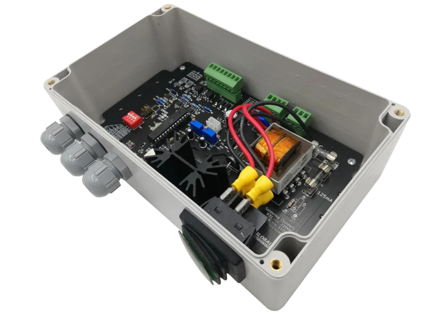

Diseño de hardware electrónico a medida
Cuando el equipo que necesitas no existe en el catálogo de nadie, hay que diseñarlo. Eso es lo que hacemos: electrónica pensada para tu proceso, no adaptada a la fuerza desde un producto genérico.

El problema de comprar un equipo que casi sirve
Compras un equipo importado porque es lo más parecido a lo que necesitas. Mide, pero no la variable que importa. Comunica, pero no con el sistema que ya tienes. Funciona en el escritorio y falla en terreno, donde hay polvo, vibración y temperatura.
Terminas pagando dos veces: el equipo y las horas de alguien tratando de hacerlo calzar. Y cuando se echa a perder, el repuesto llega del otro lado del mundo.
Un diseño a medida parte al revés: primero el requerimiento, después la electrónica.
Del requerimiento al prototipo funcionando
Nos hacemos cargo del diseño completo, no de una parte suelta.
Levantamiento del requerimiento
Partimos entendiendo qué tiene que medir, controlar o comunicar el equipo, y en qué condiciones reales va a trabajar.
Esquemático y selección de componentes
Definimos la arquitectura, el microcontrolador y cada componente pensando en disponibilidad y continuidad, no solo en el mejor número de la hoja de datos.
Diseño de PCB
Trazado de la placa cuidando ruido eléctrico, consumo, disipación y el espacio físico donde va a ir montada.
Prototipo y validación
Fabricamos el prototipo y lo probamos contra el requerimiento original, en laboratorio y en terreno cuando corresponde.
Documentación y propiedad
Te entregamos el diseño documentado. El desarrollo es tuyo; no quedas amarrado a nosotros para poder seguir.
Diseños que ya están operando
Telemetría agrícola
AgroSensores de humedad, temperatura y conductividad de suelo, presión de línea de riego y control de bombas.
Telemetría industrial
IndustriaMonitoreo de nivel, presión y vibración en procesos donde una detención cuesta caro.
Energía
EnergíaMedición y control en instalaciones eléctricas, con foco en bajo consumo y operación autónoma.
Instrumentación
LaboratorioEquipos de medición especializados, como viscosímetros de laboratorio y en línea.
Lo que nos preguntan antes de partir
¿Cuánto demora diseñar un equipo a medida?
Depende de la complejidad. Un desarrollo acotado sobre una base existente avanza bastante más rápido que un diseño desde cero con certificaciones de por medio. En la primera reunión definimos el alcance y recién ahí comprometemos plazos: preferimos una fecha realista a una que suene bien.
¿El diseño queda de mi empresa?
Sí. Te entregamos el desarrollo documentado y la propiedad del diseño es tuya. No usamos el diseño como forma de amarrar al cliente.
¿Trabajan con series pequeñas?
Sí. Fabricamos desde prototipos y series cortas hasta producciones medianas. De hecho la serie corta es donde más nos piden, porque las fábricas grandes no la toman.
¿Puedo partir solo con un prototipo?
Sí, y en general es lo recomendable. Validar un prototipo en terreno antes de comprometer una producción completa evita el error caro.
¿Dónde están ubicados?
En Viña del Mar, Región de Valparaíso, con stock propio en la Región Metropolitana y Valparaíso. Trabajamos proyectos en todo Chile.
Otros servicios
Conversemos el proyecto
Cuéntanos qué necesitas medir, controlar o automatizar. Te respondemos con un alcance concreto, no con un folleto.